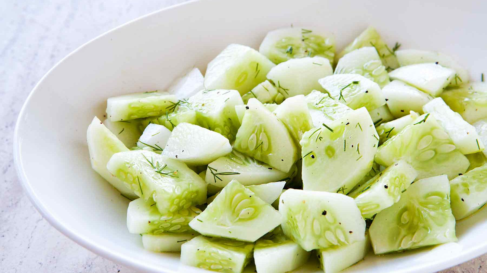

Go Back
Egg Fried Rice

Ingredients
1 cucumber, sliced
3 tbsp sugar
1/4 cup fresh lemon juice
8 oz. sour cream
1 tspn salt
1/2 tspn dill
Methods
Dissolve sugar in lemon juice. Add sour cream, salt and dill. Mix with the cucumbers.